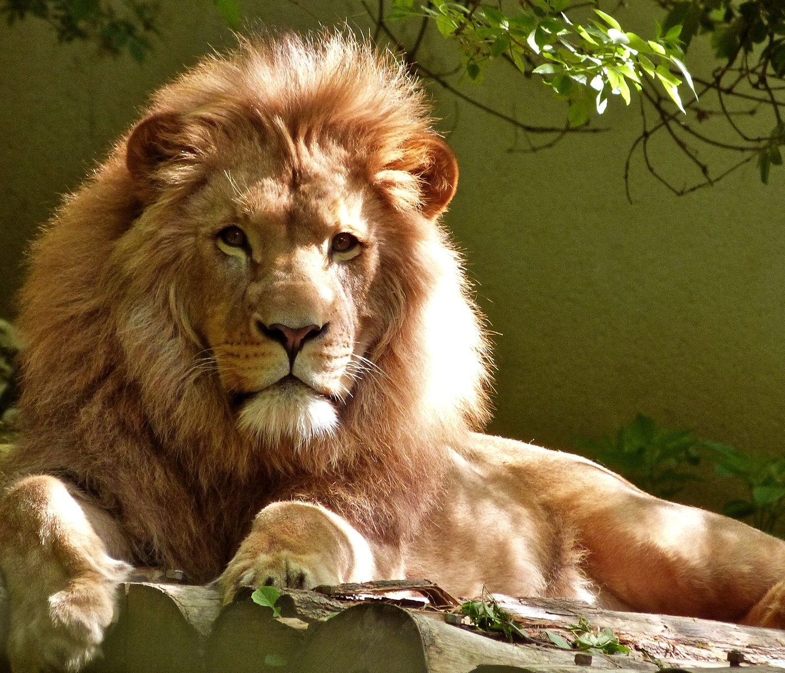
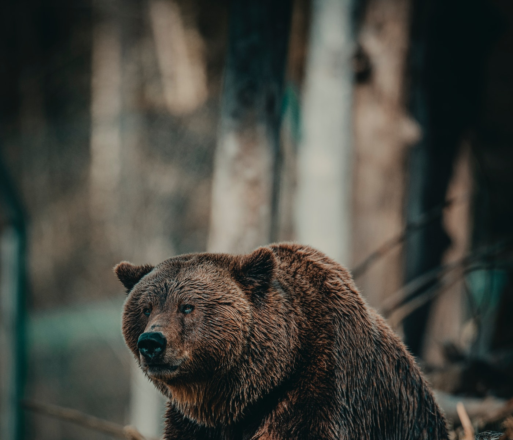
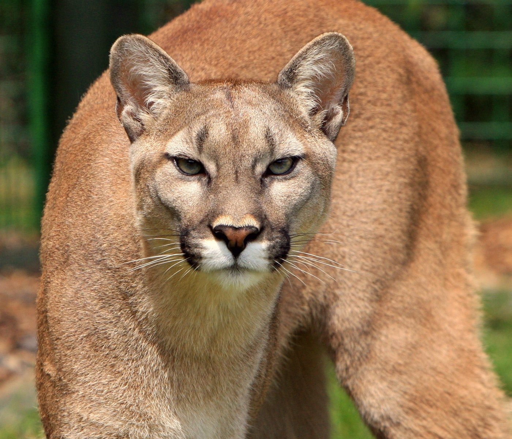
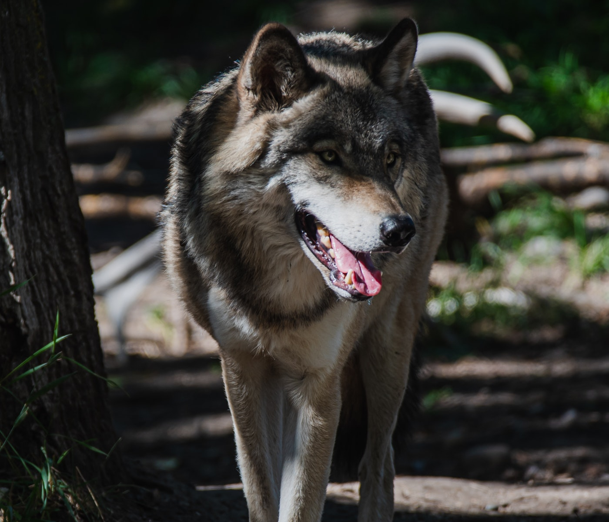
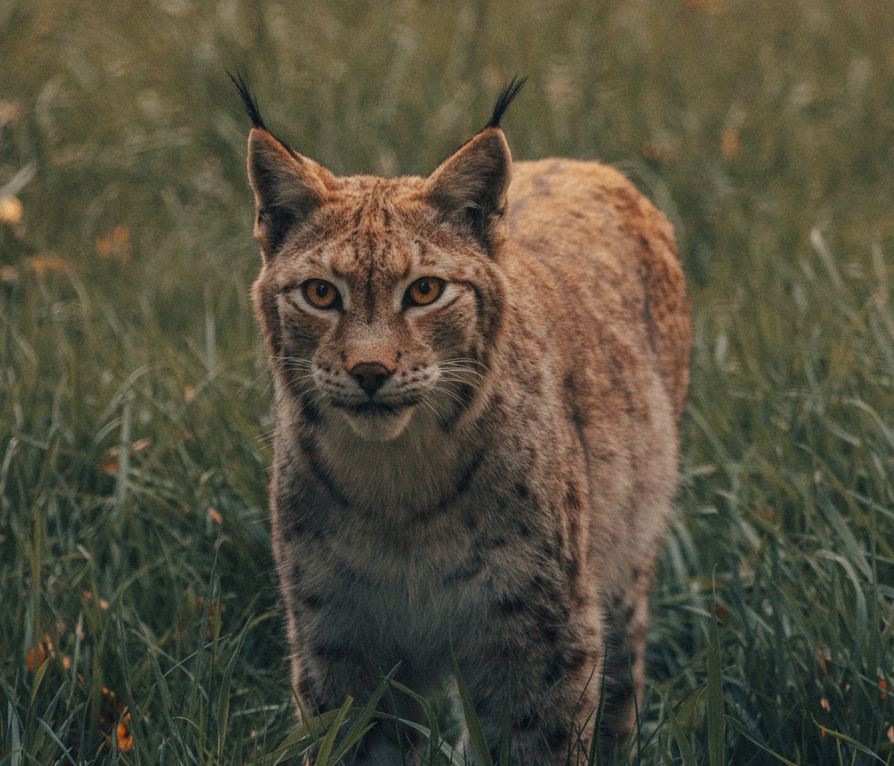
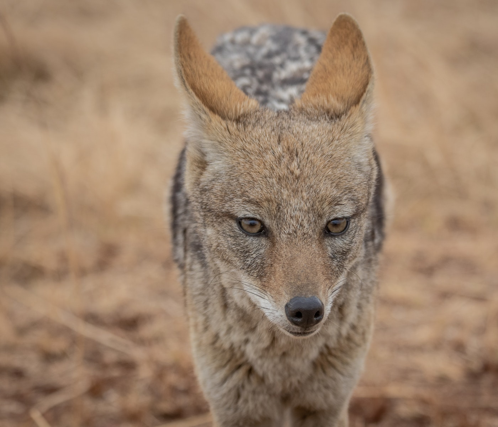
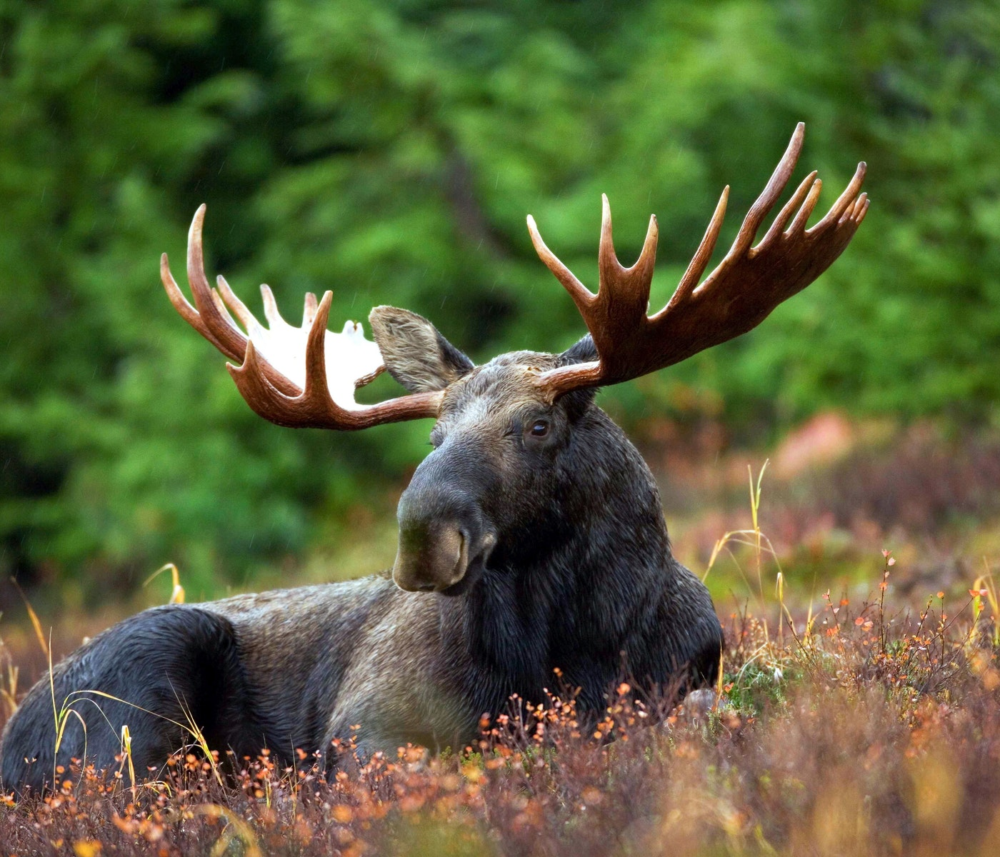
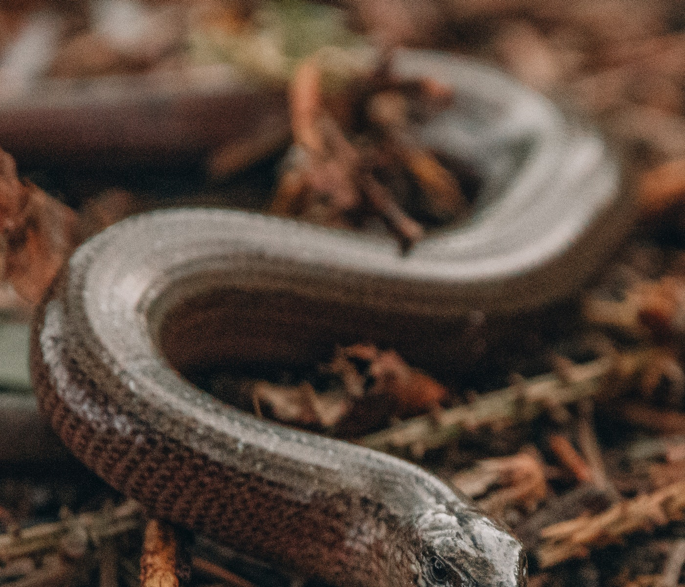

What To Do If You Encounter A Wild Animal
It is important to care and protect wild animals as the can not physically protect their environment when it come to the
interferance of human behaviour to their environment by themself.
Humans need to protect all wild anima as they are part of our shared environment.
Humans have the power to effect the environment on a large scale and need to be responsible for their actions.
We have already done so much damage to the environment of many different animal species.
And think who else is going to protect them from threats outside of their control.
Humans need to protect all wild anima as they are part of our shared environment.
Humans have the power to effect the environment on a large scale and need to be responsible for their actions.
We have already done so much damage to the environment of many different animal species.
And think who else is going to protect them from threats outside of their control.
One of the reasons that we are so keen to get out into the wilderness is for the wildlife so that we can be close to it
and see wild animals passing close to us, or just watch from a distance.
When it all works out and we take some nice photographs from a safe distance, we regard it as a great trip, but things
can get scary when they get too close for comfort.
Sometimes you also may have a close encounter with one of our more dangerous wild animals, and your reactions in those
situations could be crucial to your safety and survival.
Sometimes you also may have a close encounter with one of our more dangerous wild animals, and your reactions in those
situations could be crucial to your safety and survival.

The lion (Panthera leo) is a species in the family Felidae and a member of the genus Panthera. It has a muscular,
deep-chested body, short, rounded head, round ears, and a hairy tuft at the end of its tail. It is sexually dimorphic;
adult male lions have a prominent mane.
~Somewhere, World
There are many things that provoke wild animals to attack, so whatever you do, try to avoid doing them!
Do these steps:
Do not approach and surprise an Animal
Do not startle a mother with her babies
Don’t go off the trail after dark
Do not get close to their food source
Do not get too close to them
Do not feed animals
Don't try to pet the animals
Bear

If you see a bear close to you, make sure you stay calm and stand your ground while waving your hands slowly above your
head and do not try to run away or turn you back to the bear.
A bear is most likely to attack if it feels that her cubs are in danger. So if you see baby bears, stay away from them
since the mother is probably very close by. Also, if the bear huffs or stomps a paw, make sure you give it space and
back off.
If there’s a group of you all do it at the same time, having a group can be a very effective deterrent.
Mountain Lion

If you get in a close encounter with a mountain lion, make sure that you put yourself in the role of a predator.
Standing close with your friends, waving your hands, and shouting should scare the animal and you will be safe. Whatever
you do, do not run away from it, since it will run after you and attack you.
Wolf

Same as the mountain lion, if you spot a wolf or a pack of wolfs, make sure you stand tall and big, open your jacket,
wave your hands, and make lots of noises, or just slowly back away from them. The wolf attack very rarely, and they are
not so aggressive as the other animals on this list and as media and films make out.
Bobcat

If you see a bobcat near, make sure you protect your children, since they often attack smaller prey. If the animal is
still, just remain calm yourself, make an eye contact with it, and slowly back away. In the case of the bobcat attacking
you, make yourself as big as possible, defend with everything you got, and make sure you protect your head and throat.
Coyote

Make sure you avoid hiking at dusk since the coyotes tend to appear at that time, and if you see one, do not approach
it. If a coyote is preparing to attack, you will hear it barking, rearing on its hind legs, or following you on your
path. So, to defend yourself, you should make loud noises, scream, yell, clap, or throw something at its directions,
like water, rocks, etc.
Moose

Unlike situations with other wild animals, if you get attacked by a moose, you should run as fast as you can, although
it is very hard to outrun a moose. Also, try to find a tree to climb or somewhere to cover from the attack. If the
animal knocks you down, make sure you curl into a ball and cover your head with your arms, and wait for the moose to go
away.
Snake

If you are walking on the trail, the chances of getting in an encounter with a snake are very small, since they tend to
stay away from noises and people. If, by chance, you see a snake crossing your path, make sure you stop walking, remain
calm, and let the snake go away. The snake will not attack if it’s not feeling threatened by you.
Read More